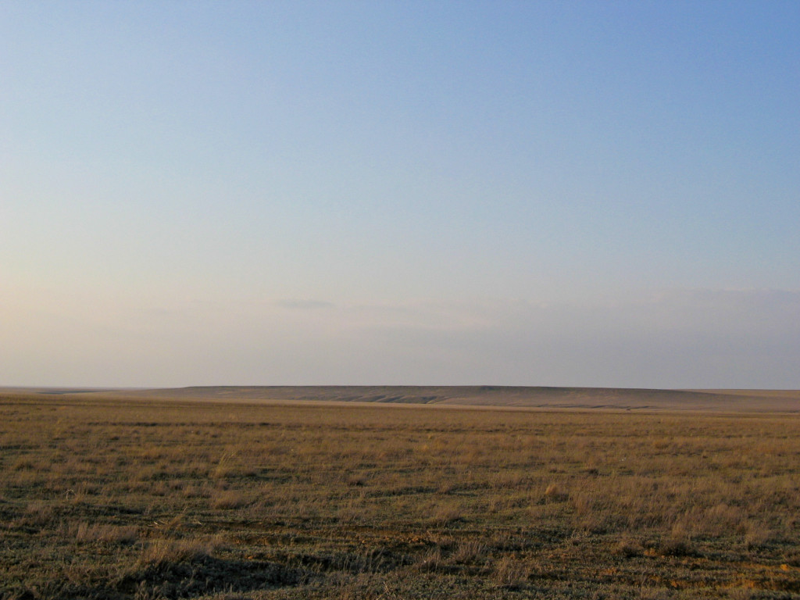

48th ICPC World Championship · Problem I
The gas pedal on the floor. Squealing tires. Wailing sirens. Emergency vehicles do whatever is necessary to reach their target locations as quickly as possible. Time is critical because lives often depend on it.
Providing emergency services is always challenging, especially for sparsely populated areas such as the Kazakh Steppe. The cost of building infrastructure is high compared to the number of people served. It is therefore important to minimize both the number of roads and the number of vehicles. On the other hand, it is also vital to minimize the response time of emergency services.

This problem considers a road network that already minimizes the number of roads, which means that any two villages are connected by exactly one path. Thanks to a government grant, the Kazakh Steppe Fire Department recently acquired some shiny new fire engines. The department wants to establish fire stations in some of the villages and allocate the fire engines to them in a way that optimizes the guaranteed response time.
Your task is to find an optimal placement of fire engines that minimizes the time needed for any village to be reached by a fire engine. You can neglect the time needed to assemble the fire crew and start the engine as well as the time to travel across any villages. The response time is determined solely by traveling along the roads.
The first line contains two integers: the number of villages n (1 ≤ n ≤ 100 000) and the number of fire engines f (1 ≤ f ≤ n).
This is followed by n−1 lines numbered from 2 to n. Line number i contains two integers vi (1 ≤ vi < i) and ti (1 ≤ ti ≤ 10 000) meaning that there is a two-way road between villages i and vi that can be traveled in time ti.
Output the minimum response time that can be guaranteed by placing fire engines into f villages.
6 2 1 8 2 7 2 7 3 6 3 5
8
3 3 1 1000 2 1000
0